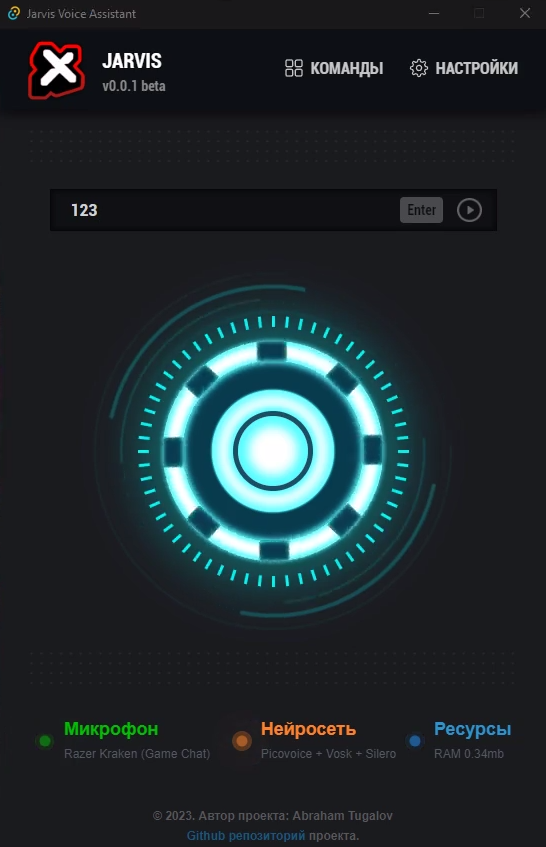

Джарвис
универсальный голосовой помощник
Стек технологий джарвиса NodeJS + npm + TypeScript + Tauri + Vite + Svelte + Rust + SurrealDB Установить самую новую версию можно ниже
Download

Стек технологий джарвиса NodeJS + npm + TypeScript + Tauri + Vite + Svelte + Rust + SurrealDB Установить самую новую версию можно ниже
DownloadПерейдите в настройки джарвиса, там надо вписать свои API ключи от сервиса Picovoice и ChatGpt но версия с ChatGpt еще находится в разработке и поэтому вписывать API ключ не обязательно. Конфигурация джарвиса пока что не работает на виндовс 7 и не поддерживает системы 32 битных ОС. У многих могут возникнуть ошибки, связанные с pv_recorder и picovoice. Ожидайте FIX 5 для новой версии джарвиса, там будет версия на CPAL. Скорее всего, это решит проблему.
Здесь можете вибрать голос асистента
Здесь нужно выбрать свой микрофон
Здесь нужно вписать свои API ключи